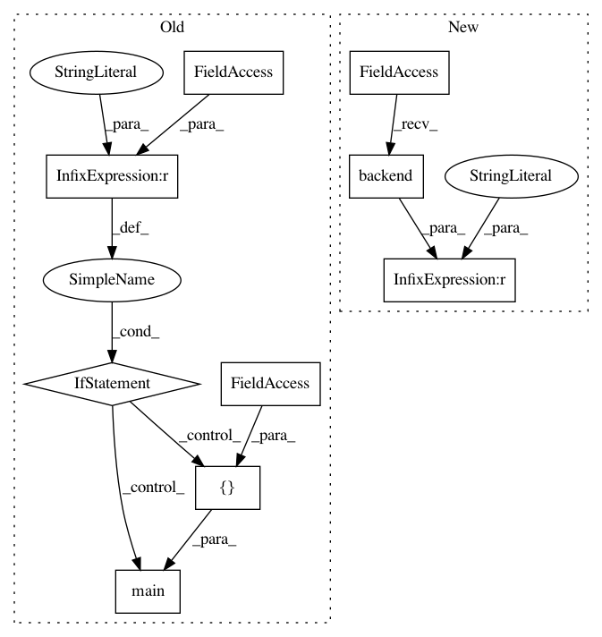

caceebcbe9afd0d4ff51cdfb88c16fd7f34ff104,tests/keras/losses_test.py,,,#,769
Before Change
assert np.allclose(K.eval(loss), (0.001822, 0.000459, 0.169846), atol=1e-3)
if __name__ == "__main__":
pytest.main([__file__])
After Change
skipif_not_tf = pytest.mark.skipif(
K.backend() != "tensorflow",
reason="Need TensorFlow to __call__ a loss")
class TestLossClasses(object):
In pattern: SUPERPATTERN
Frequency: 3
Non-data size: 9
Instances
Project Name: keras-team/keras
Commit Name: caceebcbe9afd0d4ff51cdfb88c16fd7f34ff104
Time: 2019-08-25
Author: francois.chollet@gmail.com
File Name: tests/keras/losses_test.py
Class Name:
Method Name:
Project Name: keras-team/keras
Commit Name: 8f41e41eda6e8ea96403cae5798a5a89c8bb5605
Time: 2018-12-20
Author: frederic.branchaud-charron@usherbrooke.ca
File Name: tests/test_multiprocessing.py
Class Name:
Method Name:
Project Name: keras-team/keras
Commit Name: 555ca942df407b8c1bf1d48383c60fa1bf09cc1d
Time: 2019-08-28
Author: francois.chollet@gmail.com
File Name: tests/keras/engine/test_training.py
Class Name:
Method Name: